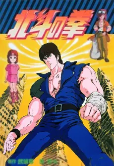

Nel mondo che ha perso tutto, la forza può ancora scegliere chi proteggere.
TOEI ANIMATIONBURONSON × TETSUO HARAAZIONE / DRAMMA / DOPO LA CATASTROFE

Serie televisiva classica. Il nuovo adattamento del 2026 ha una scheda distinta.IL MONDO DI KENSHIRO
Una storia di sopravvivenza. E di legami.
Una guerra nucleare ha spezzato la civiltà. Nell’aridità del nuovo mondo, acqua e cibo valgono più del denaro e bande armate impongono la propria legge. Fra i villaggi rimasti in piedi cammina Kenshiro, erede dell’Hokuto Shinken: un’arte marziale capace di colpire i punti segreti del corpo.
All’inizio il suo viaggio ha un obiettivo personale: ritrovare Yuria, la donna amata, rapita dal rivale Shin. L’incontro con Bat e Rin lega però quella ricerca alla vita delle persone che incontra. Proteggere un bambino, salvare un villaggio e fermare chi abusa del proprio potere diventano parte della stessa strada.
La vicenda si allarga fino ai maestri di Nanto e alla contesa fra i fratelli cresciuti nella scuola di Hokuto. Raoh, il Re del Pugno, vuole dare al mondo un ordine fondato sulla propria supremazia: il conflitto con Kenshiro mette così di fronte anche due idee diverse di ciò che un uomo forte dovrebbe fare.
Le prime sezioni descrivono la premessa e i ruoli dei protagonisti. Le rivelazioni sui destini dei personaggi sono chiuse più sotto. I paragrafi di interpretazione sono letture editoriali di Yume, distinti dai dati di produzione.
VOLTI E CONTRASTI
Le persone dietro i pugni.
Kenshiro
Il 64º successore dell’Hokuto Shinken. La sua apparente freddezza convive con una forte sensibilità verso i più deboli. Nel viaggio, la conoscenza delle tecniche non basta: conta anche ciò che impara attraverso gli incontri e il dolore.
Il maggiore dei quattro fratelli di Hokuto, noto come Ken-Oh, il Re del Pugno. Ambizione e potenza lo spingono a costruire un esercito e a cercare la conquista. Il rapporto con Kenshiro intreccia rivalità, successione e una diversa concezione del potere.
Fratello di Raoh e maestro di Hokuto, rinuncia al cammino della successione dopo essersi ammalato a causa delle radiazioni. Impiega la propria conoscenza anche per curare: lo stesso sapere che può distruggere un corpo può servire a soccorrerlo.
Maestro del Nanto Suichōken, il Pugno dell’Uccello Acquatico, cerca la sorella Airi. Il suo incontro con Kenshiro trasforma una ricerca solitaria in un legame di fiducia. Il suo stile rende riconoscibile un’altra idea del combattimento: veloce, elegante e tagliente.
Il rivale che apre la vicenda, legato alla scuola Nanto Koshu Ken. Il rapimento di Yuria e le sette ferite sul petto di Kenshiro sono il punto di partenza del conflitto. La sua storia collega desiderio, possesso e rivalità.
Bat e Rin
Due giovani sopravvissuti che accompagnano Kenshiro. Bat affianca alla sfrontatezza una generosità concreta; Rin continua a credere in un futuro possibile. Danno alla devastazione una dimensione quotidiana, fatta di persone da difendere e non soltanto di eserciti da sconfiggere.
La scuola di Kenshiro, Raoh e Toki. Nella finzione agisce sui punti segreti del corpo e viene trasmessa a un solo successore. Questa regola rende l’eredità della scuola un problema umano, oltre che tecnico: condividere un maestro non significa accettare lo stesso destino.
Nanto Seiken
Una costellazione di stili, non un’unica tecnica: Shin pratica il Nanto Koshu Ken, Rei il Nanto Suichōken, Souther il Nanto Hōōken, il Pugno della Fenice. Le differenze fra i combattenti sono parte dell’identità della serie, insieme alle stelle e ai destini che li rappresentano.
Fonti: profili di Kenshiro, Rei e Souther. Si tratta delle arti marziali immaginarie dell’opera.
DIETRO L’ANIMAZIONE
Autori, voci e musica.
Opera originale
Buronson · testi Tetsuo Hara · disegni
Animazione classica
Toei Animation
Chief director
Toyoo Ashida
Character design
Masami Suda
Musiche
Nozomi Aoki
Prima trasmissione
Fuji TV · 11 ottobre 1984
Il cast giapponese della serie classica
Personaggio
Interprete
Kenshiro
Akira Kamiya
Shin
Toshio Furukawa
Yuria
Yuriko Yamamoto
Rei
Kaneto Shiozawa
Toki
Takaya Hashi
Raoh
Kenji Utsumi
Narratore
Shigeru Chiba
Le sigle della prima serie
Crystal King interpreta l’opening Ai wo Torimodose!! e l’ending Yuria… Eien ni. KODOMO BAND firma invece Silent Survivor e Dry Your Tears, rispettivamente opening ed ending del periodo successivo della prima serie. Questi crediti riguardano le sigle giapponesi, non l’edizione italiana.
In un’intervista pubblicata dal sito ufficiale, Buronson collega il nome di Souther all’inglese South, richiamando Nanto, il Sud. Per Rei richiama invece il carattere 麗, associato alla bellezza e all’eleganza.
L’archivio Toei raggruppa Hokuto no Ken e Hokuto no Ken 2 sotto il totale di 152 episodi. Le due schede rimangono distinte: 109 episodi per la prima, 43 per la seconda.
03
L’episodio 109 ripercorre il viaggio
L’ultima puntata della prima serie torna sui ricordi, sugli incontri e sul cammino di Kenshiro. Il riepilogo ufficiale la presenta come una rilettura del suo lungo viaggio, non come l’inizio della seconda serie.
La presentazione Toei cita «Omae wa mō shindeiru», cioè «Sei già morto», fra le espressioni rese celebri dall’opera. La sua efficacia sta anche nel ritmo della scena: l’avversario scopre il pericolo quando il colpo è già arrivato.
Il seguito televisivo classico, 43 episodi. Da vedere dopo la prima serie.
Film e OVA
Opere con una propria struttura. La raccolta Shin Kyūseishu Densetsu rilegge eventi e personaggi anche attraverso prospettive diverse: non è una stagione televisiva aggiuntiva.
Un nuovo adattamento. Ha staff e cast propri e una scheda separata dalla serie degli anni Ottanta.
Per film e OVA: guida ufficiale. Per il nuovo adattamento: staff e cast ufficiali. L’ordine proposto per le due serie classiche è una guida editoriale.
OLTRE LA PREMESSA
Gli snodi della storia.
Apri l’approfondimento con spoiler sulla prima serie
Questa parte anticipa sviluppi e conclusioni di archi narrativi.
Dal salvataggio di Yuria alla responsabilità di un erede
La vittoria su Shin non chiude il viaggio di Kenshiro. La questione della successione di Hokuto lo porta a confrontarsi con ciò che i suoi fratelli hanno fatto del sapere ricevuto da Ryuken. Salvare Toki da Cassandra significa anche sfidare l’ordine imposto da Raoh.
Rei e la scelta di spendere il tempo rimasto
Ferito mortalmente da Raoh, Rei decide di dedicare il poco tempo che gli resta a Mamiya e allo scontro con Yuda. La sua forza narrativa non coincide con la sopravvivenza: è nel modo in cui sceglie di usare la propria vita per un’altra persona.
Souther: il limite di una tecnica
Kenshiro viene sconfitto una prima volta da Souther. Nel nuovo confronto comprende la particolare disposizione dei suoi organi e dei punti segreti: la vittoria richiede di capire l’avversario, oltre che aumentare la potenza dei colpi.
Raoh e il significato della vittoria
Lo scontro finale conduce alla sconfitta di Raoh. Riletto insieme ai percorsi di Toki e Rei, il finale permette una lettura precisa: Kenshiro non attraversa la storia restando uguale, ma porta con sé ciò che gli altri gli hanno lasciato. Questa interpretazione è di Yume, non una dichiarazione attribuita agli autori.
Sviluppi narrativi: archivi ufficiali di Kenshiro, Rei, Raoh, Toki e Souther, collegati nei rispettivi paragrafi.
LEGGERE, VERIFICARE, APPROFONDIRE
Fonti e criteri.
Controllo editoriale: . Testi rielaborati per Yume; i crediti si riferiscono all’anime classico. I profili del sito del franchise possono raccontare anche eventi del manga e delle opere successive: qui sono stati selezionati i dettagli pertinenti.